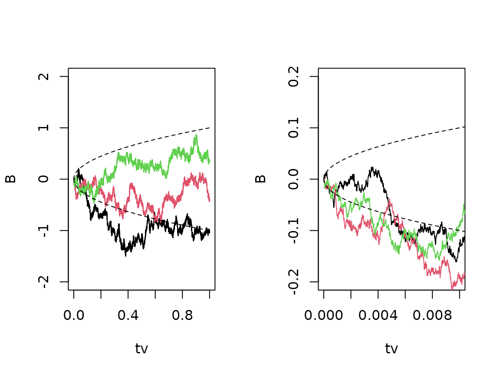
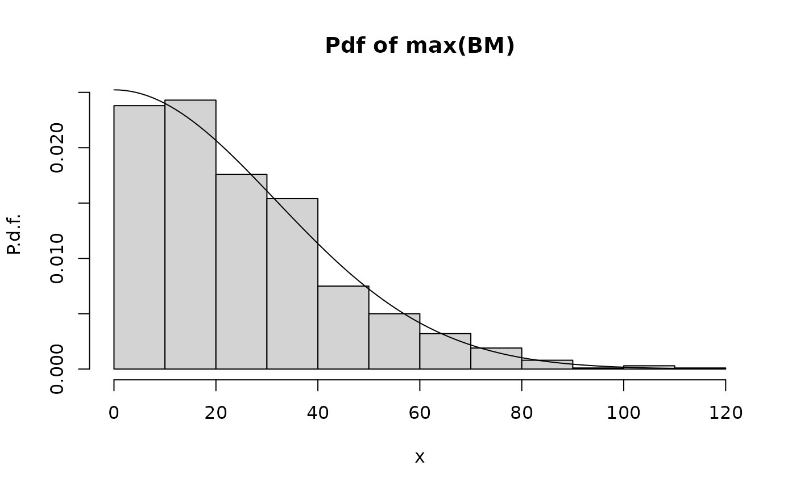
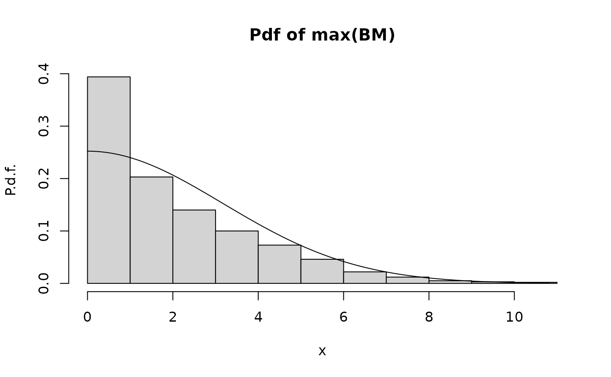

Brownian Motion
Uffe Høgsbro Thygesen
2023-06-19
Source:vignettes/BrownianMotion.Rmd
BrownianMotion.RmdSimulation of Brownian motion
Given a set of time points, it is straightforward to simulate Brownian motion restricted to those time points:
## Loading required package: SDEtools
tv <- c(0,1,2,4)
B <- rBM(tv)
plot(tv,B,type="b",xlab="t",ylab=expression(B[t]))The simulation routine starts by finding the time increments. Then random Gaussian variables are simulated for each increment, using that the increments of Brownian motion are independent and have a variance which scales with time. Finally the increments are added to obtain the Brownian motion itself.
This is coded in the function rBM:
print(rBM)## function (times, sigma = 1, B0 = 0, u = 0)
## {
## dt <- c(times[1], diff(times))
## dB <- rnorm(length(times), mean = u * dt, sd = sigma * sqrt(dt))
## B <- B0 + cumsum(dB)
## return(B)
## }
## <bytecode: 0x5564ca613e20>
## <environment: namespace:SDEtools>Verifying the statistics of Brownian motion
Let us generate a large number of sample paths for the same time discretization and check the statistics.
## [,1] [,2] [,3] [,4]
## [1,] 0 0.000000 0.000000 0.000000
## [2,] 0 1.027051 1.042329 1.038597
## [3,] 0 1.042329 2.159026 2.130307
## [4,] 0 1.038597 2.130307 4.027781Compare this with the analytical result:
## [,1] [,2] [,3] [,4]
## [1,] 0 0 0 0
## [2,] 0 1 1 1
## [3,] 0 1 2 2
## [4,] 0 1 2 4Scaling properties of Brownian motion
Brownian motion scales with the square root of time:
tv <- seq(0,1,1e-5)
B <- replicate(3,rBM(tv))
par(mfrow=c(1,2))
matplot(tv,B,type="l",lty=1,ylim=c(-2,2))
lines(tv,sqrt(tv),lty="dashed")
lines(tv,-sqrt(tv),lty="dashed")
matplot(tv,B,type="l",lty=1,ylim=c(-0.2,0.2),xlim=c(0,0.01))
lines(tv,sqrt(tv),lty="dashed")
lines(tv,-sqrt(tv),lty="dashed")
The Brownian bridge
Given two end points, we can simulate a Brownian bridge that connects them. That is, we simulate a Brownain motion conditionally on the end points.
tv <- 10:20
n <- 1e4
B0T <- c(15,5)
sigma <- 2
BB <- replicate(n,rBrownianBridge(tv,sigma=sigma,B0T=B0T))
matplot(tv,BB[,1:10],type="l",lty=1)
We can verify the statistics by plotting the mean and variance of the bridge:
Simulation of the maximum of Brownian motion
We study the maximum of the Brownian motion, as well as its maximum absolute value.
For the maximum we have the analytical result:
\[ \mathbf{P}(S_t \geq x) = 2\mathbf{P}( B_t \geq x) \]
where
\[ S_t= \max\{ B_s : 0\leq s \leq t \} \]
For the max-abs, we have the bound
\[ \mathbf{P}(\bar S_t \geq x) \leq 4\mathbf{P}( B_t \geq x) \]
where
\[ \bar S_t= \max\{ |B_s| : 0\leq s \leq t \} \]
The following code simulates a number of sample paths of Brownian motion \(B_t\) over a time interval \(t=0,\ldots,Nt\). For each sample path we compute the maximum as well as the maximum absolute value. We plot the the empirical statistics of the maximum, and the max-abs, against analytical approximations. The statistics are the histogram, which should be compared with the probability density function (pdf), and the complementary cumulated distribution function (ccdf), also referred to as the survival function.
require(SDEtools)
hist.maxBM.compare.analytical.Monte.Carlo <- function(Nt,Np)
{
## Simulate Np trajectories of BM on {0,1,...,Nt}
B <- rvBM(0:Nt,Np)
## Compute max(B) and max(abs(B))
maxB <- apply(B,2,max)
maxabsB <- apply(B,2,function(x)max(abs(x)))
## Histogram of max(B) vs theoretical p.d.f.
hist(maxB,freq=FALSE,xlab="x",ylab="P.d.f.",
main="Pdf of max(BM)")
plot(function(x)2*dnorm(x,sd=sqrt(Nt)),from=0,to=max(maxB),add=TRUE)
## Empirical vs. theoretical survival function of max(B)
plot(sort(maxB),seq(1,0,length=Np),type="s",xlab="x",ylab="Ccdf, P(X>x)",
main="Ccdf of max(BM)")
plot(function(x)2-2*pnorm(x,sd=sqrt(Nt)),from=0,to=max(maxB),add=TRUE)
## Empirical vs. approximate theoretical survival function of max(abs(B))
plot(sort(maxabsB),seq(1,0,length=Np),type="s",xlab="x",ylab="Ccdf, P(X>x)",
main="Ccdf of max(abs(BM)")
plot(function(x)4*(1-pnorm(x,sd=sqrt(Nt))),from=0,to=max(maxB),add=TRUE)
}We first try the comparison using 1000 sample paths (which is sufficient) and over 1000 time steps:
hist.maxBM.compare.analytical.Monte.Carlo(Nt=1000,Np=1000)
We see that there is excellent agreement between the maximum and the theoretical prediction. As for the max-abs, we see that there is good agreement in the tail, i.e. for high values of \(x\), but poor agreement for low values of \(x\). The reason for this disagreement is the bound on \(\mathbf{P}(\bar S_t \geq x)\) is obtained by ignoring the probability that the maximum exceeds \(x\) and at the same time the minimum exceeds \(-x\). When \(x\) is small, this error becomes large.
The next graph repeats this for a small number of time steps, \(Nt=10\).
hist.maxBM.compare.analytical.Monte.Carlo(Nt=10,Np=1000)
We see that there is poor agreement everywhere now. The reason is the difference between the continuous-time maximum
\[ \max\{ B_s : 0 \leq s \leq t\} \]
and the maximum of the sampled process
\[ \max\{ B_s : s=0,1,\ldots,t\} \]
When \(t\) is small, this difference becomes more important.